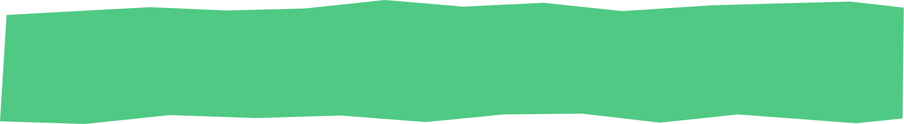
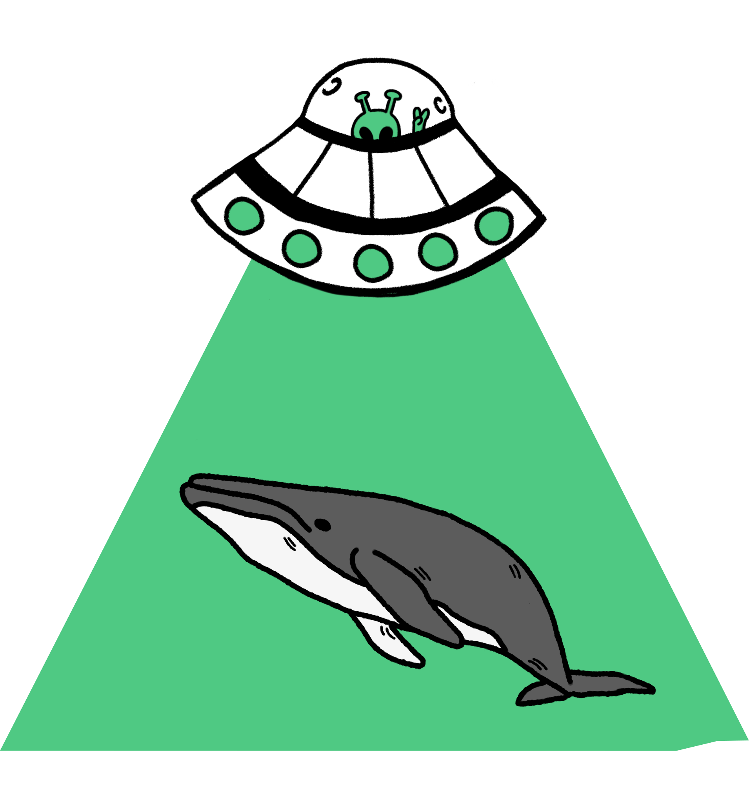
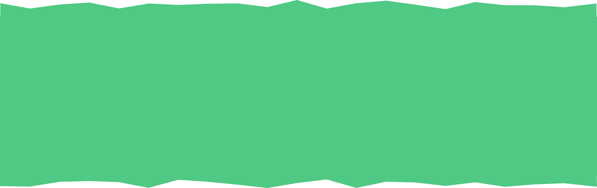

CREAMOS MARCAS CON
IDEAS CLARAS Y SISTEMAS QUE FUNCIONAN
Trabajamos desde la idea para resolver problemas de marca,
comunicación
y procesos. Cuando el foco está claro,
el formato es consecuencia.
Creemos en las ideas como herramientas para solucionar problemas.



TODAVÍA CREEMOS EN EL PODER DE

LAS IDEAS PARA SOLUCIONAR PROBLEMAS

QUÉ HACEMOS
BRANDING

Definimos marcas para que tomen mejores decisiones.
Trabajamos la estrategia, el relato y la identidad para que una marca tenga un marco claro desde donde actuar. El branding ordena: qué decir, cómo verse y qué caminos no tomar. Menos improvisación, mejores decisiones.
CONTENIDO DIGITAL

Creamos contenido alineado a una estrategia, no a la urgencia.
Diseñamos y producimos contenido audiovisual, gráfico y editorial que responde a un objetivo claro. Cada pieza cumple un rol: informar, posicionar, explicar o activar. Buscamos comunicar mejor, evitar el relleno, y optimizar recursos.
PUBLICIDAD DIGITAL

La pauta no arregla ideas malas, por eso partimos antes.
Planificamos campañas para que las ideas lleguen a las personas correctas. Desarrollamos y gestionamos publicidad digital desde la estrategia y el mensaje. La publicidad funciona mejor cuando la idea es clara y el sistema está bien pensado. Buscamos campañas más eficientes y mensajes coherentes que no se sientan forzados.
DISEÑO Y WEB

Diseñamos experiencias digitales claras y funcionales.
Creamos sitios web, aplicaciones e interfaces pensadas para ordenar información, facilitar recorridos y transmitir el sentido de la marca. Diseñamos pensando en cómo las personas entienden y usan la información. Reducimos fricción, mejoramos comprensión y guiamos decisiones.
AUTOMATIZACIÓN Y SOLUCIONES TECNOLÓGICAS

Usamos tecnología para simplificar procesos y ahorrar tiempo.
Integramos automatizaciones, herramientas digitales e IA tanto en marketing como en procesos internos. Optimizamos flujos de trabajo, reducimos tareas repetitivas para que los equipos puedan enfocarse en pensar y decidir. Eficiencia operativa, mejor uso del tiempo y equipos más enfocados.